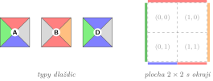
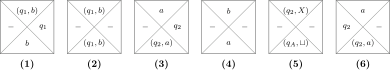

6.4 Úlohy navíc¶
Úlohy jsou psané ve stylu zápočtového testu. Úlohy 6.1–6.5, 6.6 a) a 6.7 jsou důkazy NP-úplnosti (typ 4 testu); kromě umělého \(\href{../ch-redukce/ch-redukce-np-tezkost-a-np-uplnost.html#prob-unp}{\class{woo-pk-prob-unp}{\prob{UNP}}}\) (problém 5.5) jsou jediné NP-úplné problémy, které v této chvíli známe, \(\href{ch-cook-cook-levinova-veta.html#prob-sat}{\class{woo-pk-prob-sat}{\prob{SAT}}}\) a \(\href{ch-cook-cook-levinova-veta.html#prob-dlazdickovani}{\class{woo-pk-prob-dlazdickovani}{\prob{Dlaždičkování}}}\), takže se převádí ze \(\href{ch-cook-cook-levinova-veta.html#prob-sat}{\class{woo-pk-prob-sat}{\prob{SAT}}}\)u podle receptu z oddílu 6.3. Úloha 6.6 je v částech b a c self-redukce (typ 2). Úloha 6.8 se vrací k technickému detailu důkazu Cook–Levinovy věty, na který odkazuje oddíl 6.1.2.
Neoficiální úlohy
Úlohy v tomto oddílu nejsou oficiální zadání předmětu. Jsou to procvičovací úlohy navíc k látce kapitoly. Každou redukci jsme naprogramovali a ekvivalenci odpovědí ověřili hrubou silou na stovkách až tisících malých náhodných formulí (s kladnými i zápornými odpověďmi). U úlohy 6.7 jsme na 400 náhodných formulích spočítali všechna dláždění (počet dláždění je vždy roven počtu splňujících ohodnocení). Algoritmus z úlohy 6.6 jsme porovnali s hrubou silou na 1500 formulích (orákulum nahrazené hrubou silou) a průběh příkladu spočítal skript. Ověření úlohy 6.8 popisuje její řešení.
6.4.1 Rozcvička¶
Úloha 6.1 (splnitelnost obecné formule)
Problém \(\href{#un-6-1}{\class{woo-pk-pojem-formula-sat}{\prob{Formula-SAT}}}\):
Vstup: výroková formule \(\varphi\) sestavená z proměnných, spojek \(\lnot\), \(\land\), \(\lor\) a závorek, libovolně vnořená (nemusí být v CNF), např. \(\lnot\bigl(x_1\land(x_2\lor\lnot x_3)\bigr)\lor(x_3\land\lnot x_1)\).
Otázka: existuje ohodnocení proměnných, při kterém je \(\varphi\) pravdivá?
Dokažte, že \(\href{#un-6-1}{\class{woo-pk-pojem-formula-sat}{\prob{Formula-SAT}}}\) je NP-úplný.
Řešení
Redukce: \(\href{ch-cook-cook-levinova-veta.html#prob-sat}{\class{woo-pk-prob-sat}{\prob{SAT}}} \mathrel{\href{../ch-redukce/ch-redukce-jak-porovnat-slozitost-dvou-problemu.html#def-redukce}{\class{woo-pk-def-redukce}{\redp}}} \href{#un-6-1}{\class{woo-pk-pojem-formula-sat}{\prob{Formula-SAT}}}\), formule \(\varphi\) v CNF \(\mapsto\) táž formule \(\varphi\).
1. \(\href{#un-6-1}{\class{woo-pk-pojem-formula-sat}{\prob{Formula-SAT}}}\) je v \(\href{../ch-np/ch-np-tridy-nedeterministicke-casove-slozitosti.html#def-ntime}{\class{woo-pk-def-ntime}{\NP}}\). Certifikát je ohodnocení proměnných (\(n\le|\varphi|\) bitů). Verifikátor dosadí hodnoty a formuli vyhodnotí zdola nahoru: opakovaně najde nejvnitřnější závorku, spočte její hodnotu a nahradí ji výsledkem. Každý krok formuli zkrátí, takže stačí \(O(|\varphi|)\) kroků po \(O(|\varphi|)\), celkem \(O(|\varphi|^2)\) (zásobníkem jde i lineárně).
2. Konstrukce. Formule v CNF je konjunkce závorek, v každé disjunkce literálů – tedy speciální případ obecné formule. Redukce vrátí vstup beze změny: \(f(\varphi)=\varphi\). (Řetězec, který formuli v CNF nekóduje, pošleme na pevnou \(\NE\)-instanci \((x_1)\land(\lnot x_1)\).)
3. Polynomialita. Identita, čas \(O(|\varphi|)\).
4. (\(\Rightarrow\)) Splňuje-li ohodnocení \(h\) formuli \(\varphi\) jako formuli v CNF, je \(\varphi\) při \(h\) pravdivá i jako obecná formule – pravdivostní hodnota nezávisí na tom, jak formuli nazveme.
5. (\(\Leftarrow\)) Stejně: ohodnocení, při kterém je \(\varphi\) pravdivá, splňuje každou její klauzuli.
6. Závěr. \(\href{ch-cook-cook-levinova-veta.html#prob-sat}{\class{woo-pk-prob-sat}{\prob{SAT}}}\) je NP-úplný (věta 6.2) a \(\href{ch-cook-cook-levinova-veta.html#prob-sat}{\class{woo-pk-prob-sat}{\prob{SAT}}}\mathrel{\href{../ch-redukce/ch-redukce-jak-porovnat-slozitost-dvou-problemu.html#def-redukce}{\class{woo-pk-def-redukce}{\redp}}}\href{#un-6-1}{\class{woo-pk-pojem-formula-sat}{\prob{Formula-SAT}}}\), tedy \(\href{#un-6-1}{\class{woo-pk-pojem-formula-sat}{\prob{Formula-SAT}}}\) je NP-těžký a podle bodu 1 NP-úplný.
Vzor „zobecnění“. Je-li známý NP-těžký problém speciálním případem \(Q\), je NP-těžký i \(Q\) a redukce je identita. Pozor na směr: převod obecné formule do CNF roznásobením (redukce \(\href{#un-6-1}{\class{woo-pk-pojem-formula-sat}{\prob{Formula-SAT}}}\mathrel{\href{../ch-redukce/ch-redukce-jak-porovnat-slozitost-dvou-problemu.html#def-redukce}{\class{woo-pk-def-redukce}{\redp}}}\href{ch-cook-cook-levinova-veta.html#prob-sat}{\class{woo-pk-prob-sat}{\prob{SAT}}}\)) polynomiální není – formule \((x_1\land y_1)\lor\dots\lor(x_n\land y_n)\) má po roznásobení \(2^n\) klauzulí. Pro NP-těžkost \(\href{#un-6-1}{\class{woo-pk-pojem-formula-sat}{\prob{Formula-SAT}}}\) ho ale vůbec nepotřebujeme. (Polynomiální převod s pomocnými proměnnými ukazuje Tseitinova transformace v oddílu 14.4.)
Úloha 6.2 (neekvivalence dvou formulí)
Problém \(\href{#un-6-2}{\class{woo-pk-pojem-non-equivalence}{\prob{Non-Equivalence}}}\):
Vstup: dvě formule \(\varphi\) a \(\psi\) v CNF nad proměnnými \(x_1,\dots,x_n\).
Otázka: existuje ohodnocení, při kterém má \(\varphi\) jinou pravdivostní hodnotu než \(\psi\) (tedy \(\varphi\) a \(\psi\) nejsou ekvivalentní)?
Dokažte, že \(\href{#un-6-2}{\class{woo-pk-pojem-non-equivalence}{\prob{Non-Equivalence}}}\) je NP-úplný.
Řešení
Redukce: \(\href{ch-cook-cook-levinova-veta.html#prob-sat}{\class{woo-pk-prob-sat}{\prob{SAT}}} \mathrel{\href{../ch-redukce/ch-redukce-jak-porovnat-slozitost-dvou-problemu.html#def-redukce}{\class{woo-pk-def-redukce}{\redp}}} \href{#un-6-2}{\class{woo-pk-pojem-non-equivalence}{\prob{Non-Equivalence}}}\), formule \(\varphi\) \(\mapsto\) dvojice \(\bigl(\varphi,\ \psi_0=(x_1)\land(\lnot x_1)\bigr)\).
1. \(\href{#un-6-2}{\class{woo-pk-pojem-non-equivalence}{\prob{Non-Equivalence}}}\) je v \(\href{../ch-np/ch-np-tridy-nedeterministicke-casove-slozitosti.html#def-ntime}{\class{woo-pk-def-ntime}{\NP}}\). Certifikát je ohodnocení \(h\) (\(n\) bitů). Verifikátor dosadí \(h\) do obou formulí a zkontroluje, že vyšly různé hodnoty; čas \(O(|\varphi|+|\psi|)\).
2. Konstrukce. K formuli \(\varphi\) přidáme pevnou nesplnitelnou formuli \(\psi_0=(x_1)\land(\lnot x_1)\), kde \(x_1\) je některá proměnná \(\varphi\) (nemá-li \(\varphi\) žádnou, vezmeme novou). \(\psi_0\) je při každém ohodnocení nepravdivá.
3. Polynomialita. Přibudou dvě jednotkové klauzule, čas \(O(|\varphi|)\).
4. (\(\Rightarrow\)) Nechť \(h\) splňuje \(\varphi\). Pak \(\varphi(h)=1\) a \(\psi_0(h)=0\), formule mají při \(h\) různé hodnoty, odpověď je \(\ANO\).
5. (\(\Leftarrow\)) Nechť se \(\varphi\) a \(\psi_0\) liší při ohodnocení \(h\). Protože \(\psi_0(h)=0\), je \(\varphi(h)=1\) a \(\varphi\) je splnitelná.
6. Závěr. \(\href{ch-cook-cook-levinova-veta.html#prob-sat}{\class{woo-pk-prob-sat}{\prob{SAT}}}\) je NP-úplný, \(\href{ch-cook-cook-levinova-veta.html#prob-sat}{\class{woo-pk-prob-sat}{\prob{SAT}}}\mathrel{\href{../ch-redukce/ch-redukce-jak-porovnat-slozitost-dvou-problemu.html#def-redukce}{\class{woo-pk-def-redukce}{\redp}}}\href{#un-6-2}{\class{woo-pk-pojem-non-equivalence}{\prob{Non-Equivalence}}}\), tedy \(\href{#un-6-2}{\class{woo-pk-pojem-non-equivalence}{\prob{Non-Equivalence}}}\) je NP-těžký a podle bodu 1 NP-úplný.
Typická chyba. Volit za \(\psi_0\) tautologii, např. \((x_1\lor\lnot x_1)\). Pak se ptáme, zda \(\varphi\) není tautologie, a to je pro formuli v CNF snadné: CNF je tautologie, právě když každá její klauzule obsahuje nějakou proměnnou kladně i záporně. Taková „redukce“ vede ze snadného problému a nic nedokazuje. Protiváha musí být nesplnitelná, aby se otázka „liší se?“ změnila na „je \(\varphi\) někdy pravdivá?“.
Úloha 6.3 (MAX-SAT a práh poloviny)
Problém \(\href{#un-6-3}{\class{woo-pk-pojem-max-sat}{\prob{MAX-SAT}}}\):
Vstup: formule \(\varphi\) v CNF s klauzulemi \(C_1,\dots,C_m\) (každá má aspoň jeden literál) a číslo \(k\).
Otázka: existuje ohodnocení, které splní aspoň \(k\) klauzulí?
Řešení
Redukce: \(\href{ch-cook-cook-levinova-veta.html#prob-sat}{\class{woo-pk-prob-sat}{\prob{SAT}}} \mathrel{\href{../ch-redukce/ch-redukce-jak-porovnat-slozitost-dvou-problemu.html#def-redukce}{\class{woo-pk-def-redukce}{\redp}}} \href{#un-6-3}{\class{woo-pk-pojem-max-sat}{\prob{MAX-SAT}}}\), formule \(\varphi\) s \(m\) klauzulemi \(\mapsto\) \((\varphi,\ k=m)\).
a) 1. \(\href{#un-6-3}{\class{woo-pk-pojem-max-sat}{\prob{MAX-SAT}}}\) je v \(\href{../ch-np/ch-np-tridy-nedeterministicke-casove-slozitosti.html#def-ntime}{\class{woo-pk-def-ntime}{\NP}}\). Certifikát je ohodnocení. Verifikátor spočítá splněné klauzule a porovná počet s \(k\), čas \(O(|\varphi|)\).
2. Konstrukce. Formuli necháme a položíme \(k=m\): „splnit aspoň všechny klauzule“ znamená splnit všechny. (Obsahuje-li \(\varphi\) prázdnou klauzuli, je nesplnitelná a vydáme pevnou \(\NE\)-instanci \(\bigl((x_1),\ k=2\bigr)\).)
3. Polynomialita. Spočítat klauzule a vypsat \(\varphi\) trvá \(O(|\varphi|)\).
4. (\(\Rightarrow\)) Splňující ohodnocení splní všech \(m=k\) klauzulí.
5. (\(\Leftarrow\)) Ohodnocení, které splní aspoň \(m\) z \(m\) klauzulí, splní všechny, tedy \(\varphi\) je splnitelná.
6. Závěr. \(\href{ch-cook-cook-levinova-veta.html#prob-sat}{\class{woo-pk-prob-sat}{\prob{SAT}}}\) je NP-úplný, tedy \(\href{#un-6-3}{\class{woo-pk-pojem-max-sat}{\prob{MAX-SAT}}}\) je NP-těžký a podle bodu 1 NP-úplný.
b) Ne (pokud \(\href{../ch-cas/ch-cas-tridy-p-a-exp.html#def-tridy}{\class{woo-pk-def-tridy}{\PP}}\neq\href{../ch-np/ch-np-tridy-nedeterministicke-casove-slozitosti.html#def-ntime}{\class{woo-pk-def-ntime}{\NP}}\)): odpověď je vždy \(\ANO\), takže problém je v \(\href{../ch-cas/ch-cas-tridy-p-a-exp.html#def-tridy}{\class{woo-pk-def-tridy}{\PP}}\). Vezměme libovolné ohodnocení \(h\) a jeho překlopení \(\bar h\) (všechny hodnoty prohozené). Klauzule, kterou \(h\) nesplní, má při \(h\) všechny literály nepravdivé, takže při \(\bar h\) jsou všechny pravdivé a \(\bar h\) ji splní (klauzule je neprázdná). Každou klauzuli tedy splní \(h\) nebo \(\bar h\) a
Jedno z obou ohodnocení proto splní aspoň \(m/2\) klauzulí, a protože počet je celé číslo, aspoň \(\lceil m/2\rceil\). Algoritmus „vždy odpověz \(\ANO\)“ je správný. Kdyby byl \(\href{#un-6-3}{\class{woo-pk-pojem-half-max-sat}{\prob{Half-MAX-SAT}}}\) NP-úplný, plynulo by \(\href{../ch-cas/ch-cas-tridy-p-a-exp.html#def-tridy}{\class{woo-pk-def-tridy}{\PP}}=\href{../ch-np/ch-np-tridy-nedeterministicke-casove-slozitosti.html#def-ntime}{\class{woo-pk-def-ntime}{\NP}}\) (věta 5.4).
Poučení. O těžkosti rozhoduje i parametr. U \(\href{../ch-is/sec-cv3.html#cv-3-3}{\class{woo-pk-pojem-half-clique}{\prob{Half-Clique}}}\) (cvičení 3.3 v kapitole 8) je práh „polovina“ stále těžký, protože redukce umí graf doplnit vrcholy; tady je práh \(\lceil m/2\rceil\) tak nízko, že ho splní každá formule. Redukce \(\varphi\mapsto\varphi\) s prahem \(\lceil m/2\rceil\) by z nesplnitelné formule udělala \(\ANO\)-instanci.
6.4.2 Na úrovni testu¶
Úloha 6.4 (přesně polovina proměnných pravdivá)
Problém \(\href{#un-6-4}{\class{woo-pk-pojem-half-sat}{\prob{Half-SAT}}}\):
Vstup: formule \(\varphi\) v CNF s proměnnými \(x_1,\dots,x_N\).
Otázka: existuje ohodnocení, které \(\varphi\) splňuje a při kterém má přesně \(N/2\) proměnných hodnotu \(1\)? (Pro liché \(N\) je odpověď \(\NE\).)
Řešení
Redukce: \(\href{ch-cook-cook-levinova-veta.html#prob-sat}{\class{woo-pk-prob-sat}{\prob{SAT}}} \mathrel{\href{../ch-redukce/ch-redukce-jak-porovnat-slozitost-dvou-problemu.html#def-redukce}{\class{woo-pk-def-redukce}{\redp}}} \href{#un-6-4}{\class{woo-pk-pojem-half-sat}{\prob{Half-SAT}}}\), formule \(\varphi\) nad \(x_1,\dots,x_n\) \(\mapsto\) \(\varphi'=\varphi\land\bigwedge_{i=1}^{n}(x_i\lor y_i)\land(\lnot x_i\lor\lnot y_i)\) nad \(2n\) proměnnými.
a) 1. \(\href{#un-6-4}{\class{woo-pk-pojem-half-sat}{\prob{Half-SAT}}}\) je v \(\href{../ch-np/ch-np-tridy-nedeterministicke-casove-slozitosti.html#def-ntime}{\class{woo-pk-def-ntime}{\NP}}\). Certifikát je ohodnocení. Verifikátor dosadí do všech klauzulí, spočítá jedničky a porovná s \(N/2\); čas \(O(|\varphi|+N)\).
2. Konstrukce. Ke každé proměnné \(x_i\) přidáme novou proměnnou \(y_i\) a dvě klauzule: \((x_i\lor y_i)\) zakazuje \(x_i=y_i=0\), \((\lnot x_i\lor\lnot y_i)\) zakazuje \(x_i=y_i=1\). Dohromady říkají přesně \(y_i=\lnot x_i\), takže v každé dvojici \(x_i,y_i\) je právě jedna jednička. Formule \(\varphi'\) má \(N=2n\) proměnných (všechny se v ní vyskytují).
3. Polynomialita. Přibude \(n\) proměnných a \(2n\) dvouprvkových klauzulí, čas \(O(|\varphi|+n)\).
4. (\(\Rightarrow\)) Nechť \(h\) splňuje \(\varphi\). Položíme \(y_i=1-h(x_i)\). Formule \(\varphi\) proměnné \(y_i\) neobsahuje, je tedy splněná; přidané klauzule jsou splněné, protože \(x_i\neq y_i\). Jedniček je přesně \(n=N/2\) (jedna v každé dvojici).
5. (\(\Leftarrow\)) Nechť \(g\) splňuje \(\varphi'\) (s jakýmkoli počtem jedniček). Pak splňuje i podformuli \(\varphi\), a protože \(\varphi\) obsahuje jen \(x_1,\dots,x_n\), splňuje ji i zúžení \(g\) na tyto proměnné.
6. Závěr. \(\href{ch-cook-cook-levinova-veta.html#prob-sat}{\class{woo-pk-prob-sat}{\prob{SAT}}}\) je NP-úplný, tedy \(\href{#un-6-4}{\class{woo-pk-pojem-half-sat}{\prob{Half-SAT}}}\) je NP-těžký a podle bodu 1 NP-úplný.
b) Stejná redukce. Každé splňující ohodnocení \(\varphi'\) má podle bodu 2 přesně \(n=N/2\) jedniček, takže pro \(\varphi'\) platí: „existuje splňující ohodnocení s aspoň \(N/2\) jedničkami“ \(\iff\) „existuje splňující ohodnocení s přesně \(N/2\) jedničkami“ \(\iff\) „\(\varphi'\) je splnitelná“ \(\iff\) „\(\varphi\) je splnitelná“. Příslušnost do \(\href{../ch-np/ch-np-tridy-nedeterministicke-casove-slozitosti.html#def-ntime}{\class{woo-pk-def-ntime}{\NP}}\) je stejná (certifikát je ohodnocení).
Typická chyba. Redukce \(\varphi\mapsto\varphi\) nefunguje: \((x_1)\land(x_2)\) je splnitelná, ale jen ohodnocením se dvěma jedničkami ze dvou. Gadget \(y_i=\lnot x_i\) „pohltí“ počítání jedniček – jejich počet je pak pevný, ať je \(h\) jakékoli. Stejný trik uvidíš u \(\href{../ch-is/sec-cv3.html#cv-3-3}{\class{woo-pk-pojem-half-clique}{\prob{Half-Clique}}}\) (cvičení 3.3 v kapitole 8): instanci doplníme tak, aby se požadovaný počet trefil přesně.
Úloha 6.5 (jiné splňující ohodnocení)
Problém \(\href{#un-6-5}{\class{woo-pk-pojem-another-sat}{\prob{Another-SAT}}}\):
Vstup: formule \(\varphi\) v CNF a ohodnocení \(h\), které \(\varphi\) splňuje.
Otázka: má \(\varphi\) ještě jiné splňující ohodnocení (různé od \(h\))?
Dokažte, že \(\href{#un-6-5}{\class{woo-pk-pojem-another-sat}{\prob{Another-SAT}}}\) je NP-úplný. Nápověda: přidejte novou proměnnou \(y\) tak, aby jedno splňující ohodnocení šlo napsat hned.
Řešení
Redukce: \(\href{ch-cook-cook-levinova-veta.html#prob-sat}{\class{woo-pk-prob-sat}{\prob{SAT}}} \mathrel{\href{../ch-redukce/ch-redukce-jak-porovnat-slozitost-dvou-problemu.html#def-redukce}{\class{woo-pk-def-redukce}{\redp}}} \href{#un-6-5}{\class{woo-pk-pojem-another-sat}{\prob{Another-SAT}}}\), formule \(\varphi\) nad \(x_1,\dots,x_n\) \(\mapsto\) \((\varphi',h_0)\), kde \(\varphi'=\bigwedge_{C\in\varphi}(C\lor y)\land\bigwedge_{i=1}^{n}(\lnot y\lor\lnot x_i)\) a \(h_0\): \(y=1\), \(x_1=\dots=x_n=0\).
1. \(\href{#un-6-5}{\class{woo-pk-pojem-another-sat}{\prob{Another-SAT}}}\) je v \(\href{../ch-np/ch-np-tridy-nedeterministicke-casove-slozitosti.html#def-ntime}{\class{woo-pk-def-ntime}{\NP}}\). Certifikát je ohodnocení \(g\). Verifikátor zkontroluje, že se \(g\) liší od \(h\) aspoň v jedné proměnné a že splňuje \(\varphi\); čas \(O(|\varphi|+n)\).
2. Konstrukce. Zvolíme novou proměnnou \(y\). Do každé klauzule \(C\) formule \(\varphi\) přidáme literál \(y\) a pro každou proměnnou \(x_i\) přidáme klauzuli \((\lnot y\lor\lnot x_i)\), tedy implikaci \(y\Rightarrow\lnot x_i\). Ohodnocení \(h_0\) (\(y=1\), všechna \(x_i=0\)) \(\varphi'\) splňuje: klauzule \((C\lor y)\) splní \(y\), klauzule \((\lnot y\lor\lnot x_i)\) splní \(\lnot x_i\). Výstup je tedy platná instance – vstupem \(\href{#un-6-5}{\class{woo-pk-pojem-another-sat}{\prob{Another-SAT}}}\) smí být jen formule se splňujícím ohodnocením.
3. Polynomialita. Každá klauzule se prodlouží o jeden literál, přibude \(n\) dvouprvkových klauzulí; \(h_0\) má \(n+1\) bitů. Čas \(O(|\varphi|+n)\).
4. (\(\Rightarrow\)) Nechť \(g\) splňuje \(\varphi\). Rozšíříme ho o \(y=0\). Klauzule \((C\lor y)\) má pak hodnotu \(C\) a je pravdivá, klauzuli \((\lnot y\lor\lnot x_i)\) splní \(\lnot y\). Rozšířené \(g\) splňuje \(\varphi'\) a liší se od \(h_0\) v proměnné \(y\). Odpověď je \(\ANO\).
5. (\(\Leftarrow\)) Nechť \(g'\neq h_0\) splňuje \(\varphi'\). Kdyby \(g'(y)=1\), klauzule \((\lnot y\lor\lnot x_i)\) by vynutily \(x_i=0\) pro všechna \(i\), tedy \(g'=h_0\) – spor. Proto \(g'(y)=0\) a každá klauzule \((C\lor y)\) je pravdivá jen díky \(C\). Zúžení \(g'\) na \(x_1,\dots,x_n\) splňuje \(\varphi\).
6. Závěr. \(\href{ch-cook-cook-levinova-veta.html#prob-sat}{\class{woo-pk-prob-sat}{\prob{SAT}}}\) je NP-úplný, tedy \(\href{#un-6-5}{\class{woo-pk-pojem-another-sat}{\prob{Another-SAT}}}\) je NP-těžký a podle bodu 1 NP-úplný.
Typická chyba. Zobrazit \(\varphi\) na \((\varphi,h)\) s „nějakým“ splňujícím ohodnocením \(h\) nejde: redukce ho musí sestrojit v polynomiálním čase, a najít splňující ohodnocení je právě to těžké. Proto si formuli upravíme tak, aby jedno (nezajímavé) splňující ohodnocení \(h_0\) měla vždy a všechna ostatní odpovídala řešením \(\varphi\). Srovnej s \(\href{../ch-sat/ch-sat-ulohy-navic.html#un-7-4}{\class{woo-pk-pojem-double-sat}{\prob{Double-SAT}}}\) (úloha 7.4 (Double-SAT)), kde se ptáme na dvě řešení bez nápovědy.
Úloha 6.6 (ohodnocení s nejméně jedničkami z orákula)
Problém \(\href{#un-6-6}{\class{woo-pk-pojem-min-ones-sat}{\prob{Min-Ones SAT}}}\): Vstup: formule \(\varphi\) v CNF nad \(x_1,\dots,x_n\) a číslo \(k\). Otázka: existuje ohodnocení, které \(\varphi\) splňuje a má nejvýše \(k\) proměnných rovných \(1\)?
- Dokažte, že \(\href{#un-6-6}{\class{woo-pk-pojem-min-ones-sat}{\prob{Min-Ones SAT}}}\) je NP-úplný.
- Máte orákulum, které \(\href{#un-6-6}{\class{woo-pk-pojem-min-ones-sat}{\prob{Min-Ones SAT}}}\) rozhodne v jednom kroku. Pomocí něj najděte splňující ohodnocení \(\varphi\) s nejmenším možným počtem jedniček, nebo oznamte, že \(\varphi\) je nesplnitelná. Zdůvodněte správnost a určete počet dotazů vzhledem k \(n\).
- Proveďte b) pro \(\varphi=(x_1\lor x_2)\land(\lnot x_1\lor x_3)\land(x_2\lor x_3)\land(\lnot x_2\lor\lnot x_3)\land(x_1\lor x_4)\).
Řešení
Redukce: \(\href{ch-cook-cook-levinova-veta.html#prob-sat}{\class{woo-pk-prob-sat}{\prob{SAT}}} \mathrel{\href{../ch-redukce/ch-redukce-jak-porovnat-slozitost-dvou-problemu.html#def-redukce}{\class{woo-pk-def-redukce}{\redp}}} \href{#un-6-6}{\class{woo-pk-pojem-min-ones-sat}{\prob{Min-Ones SAT}}}\), formule \(\varphi\) \(\mapsto\) \((\varphi,\ k=n)\); v části b) redukce s orákulem \(\href{#un-6-6}{\class{woo-pk-pojem-min-ones-sat}{\prob{Min-Ones SAT}}}\) – nejlepší ohodnocení \(\to\) \(\href{#un-6-6}{\class{woo-pk-pojem-min-ones-sat}{\prob{Min-Ones SAT}}}\) – rozhodovací verze. Jak: optimum \(k^*\) binárním vyhledáváním, pak proměnné po jedné zkusmo nastavujeme na \(0\) a orákulem hlídáme, že ohodnocení s \(k^*\) jedničkami pořád existuje.
a) V \(\href{../ch-np/ch-np-tridy-nedeterministicke-casove-slozitosti.html#def-ntime}{\class{woo-pk-def-ntime}{\NP}}\): certifikát je ohodnocení, verifikátor dosadí a spočítá jedničky. NP-těžkost: každé ohodnocení má nejvýše \(n\) jedniček, takže \((\varphi,n)\) je \(\ANO\)-instance, právě když \(\varphi\) je splnitelná (obě implikace jsou tatáž věta); redukce jen dopíše číslo \(n\). Podle principu štafety je \(\href{#un-6-6}{\class{woo-pk-pojem-min-ones-sat}{\prob{Min-Ones SAT}}}\) NP-těžký, tedy NP-úplný. (Vzor „zobecnění“: \(\href{ch-cook-cook-levinova-veta.html#prob-sat}{\class{woo-pk-prob-sat}{\prob{SAT}}}\) je případ \(k=n\).)
b) Algoritmus.
- Zeptej se na \((\varphi,n)\). Při \(\NE\) je \(\varphi\) nesplnitelná – konec.
- Hodnota optima. Označme \(k^*\) nejmenší počet jedniček splňujícího ohodnocení. Odpověď na \((\varphi,k)\) je monotónní v \(k\) (ohodnocení s nejvýše \(k\) jedničkami má i nejvýše \(k+1\)). Binární vyhledávání na \([lo,hi]=[0,n]\) s invariantem \(lo\le k^*\le hi\): pro \(mid=\lfloor(lo+hi)/2\rfloor\) se zeptej na \((\varphi,mid)\); při \(\ANO\) polož \(hi:=mid\), při \(\NE\) \(lo:=mid+1\). Při \(lo=hi\) je \(k^*=lo\).
- Fixování. Polož \(\varphi_0:=\varphi\). Pro \(i=1,\dots,n\) se zeptej na \((\varphi_{i-1}\land(\lnot x_i),\ k^*)\). Při \(\ANO\) polož \(x_i:=0\) a \(\varphi_i:=\varphi_{i-1}\land(\lnot x_i)\), při \(\NE\) polož \(x_i:=1\) a \(\varphi_i:=\varphi_{i-1}\land(x_i)\).
- Vydej \((x_1,\dots,x_n)\).
Práh \(k^*\) se při fixování nemění: počítá všechny jedničky, i ty, které jsme už zafixovali.
Invariant: \(\varphi_i\) má splňující ohodnocení s nejvýše \(k^*\) jedničkami a každé splňující ohodnocení \(\varphi_i\) splňuje \(\varphi\) a má na \(x_1,\dots,x_i\) hodnoty zvolené algoritmem.
- Na začátku platí podle kroku 2 (\(\varphi_0=\varphi\) má ohodnocení s \(k^*\) jedničkami).
- Krok \(\ANO\): tvrzení pro \(\varphi_i=\varphi_{i-1}\land(\lnot x_i)\) říká přímo orákulum.
- Krok \(\NE\): podle invariantu má \(\varphi_{i-1}\) splňující ohodnocení \(g\) s nejvýše \(k^*\) jedničkami. Žádné takové nemá \(x_i=0\) (jinak by orákulum řeklo \(\ANO\)), tedy \(g(x_i)=1\) a \(g\) splňuje i \(\varphi_{i-1}\land(x_i)\).
- Přidaná jednotková klauzule zafixuje \(x_i\) a formule zůstává v CNF.
Konec. \(\varphi_n\) má všechny proměnné zafixované, její jediné splňující ohodnocení je výstup algoritmu. Podle invariantu splňuje \(\varphi\) a má nejvýše \(k^*\) jedniček; méně jich mít nemůže, protože \(k^*\) je minimum. Výstup je tedy optimální.
Počet dotazů: \(1+\lceil\log_2(n+1)\rceil+n=O(n)\). Každý dotaz je \(\varphi\) s nejvýše \(n\) jednotkovými klauzulemi a číslem \(k\le n\), tedy polynomiálně velký.
c) Průběh. Splňující ohodnocení jsou \(x_1x_2x_3x_4\in\{0101,\ 1010,\ 1011\}\), optimum má 2 jedničky.
| dotaz | odpověď | důsledek |
|---|---|---|
| \((\varphi,4)\) | \(\ANO\) | \(\varphi\) je splnitelná, \([lo,hi]=[0,4]\) |
| \((\varphi,2)\) | \(\ANO\) | \([lo,hi]=[0,2]\) |
| \((\varphi,1)\) | \(\NE\) | \([lo,hi]=[2,2]\), tedy \(k^*=2\) |
| \((\varphi\land(\lnot x_1),2)\) | \(\ANO\) | \(x_1=0\) |
| \((\varphi_1\land(\lnot x_2),2)\) | \(\NE\) | \(x_2=1\) (při \(x_1=0\) vynucuje \((x_1\lor x_2)\)) |
| \((\varphi_2\land(\lnot x_3),2)\) | \(\ANO\) | \(x_3=0\) |
| \((\varphi_3\land(\lnot x_4),2)\) | \(\NE\) | \(x_4=1\) (vynucuje \((x_1\lor x_4)\)) |
Výsledek \(x_1x_2x_3x_4=0101\) se dvěma jedničkami, 7 dotazů. Kontrola: \((x_1\lor x_2)\) a \((x_2\lor x_3)\) splní \(x_2\), \((\lnot x_1\lor x_3)\) a \((\lnot x_2\lor\lnot x_3)\) splní \(\lnot x_1\) a \(\lnot x_3\), \((x_1\lor x_4)\) splní \(x_4\).
6.4.3 Těžší úlohy¶
Úloha 6.7 (\(\href{ch-cook-cook-levinova-veta.html#prob-sat}{\class{woo-pk-prob-sat}{\prob{SAT}}}\mathrel{\href{../ch-redukce/ch-redukce-jak-porovnat-slozitost-dvou-problemu.html#def-redukce}{\class{woo-pk-def-redukce}{\redp}}}\href{ch-cook-cook-levinova-veta.html#prob-dlazdickovani}{\class{woo-pk-prob-dlazdickovani}{\prob{Dlaždičkování}}}\) přímo)
V oddílu 6.1.2 jsme NP-těžkost \(\href{ch-cook-cook-levinova-veta.html#prob-dlazdickovani}{\class{woo-pk-prob-dlazdickovani}{\prob{Dlaždičkování}}}\) dokázali převodem libovolného jazyka z \(\href{../ch-np/ch-np-tridy-nedeterministicke-casove-slozitosti.html#def-ntime}{\class{woo-pk-def-ntime}{\NP}}\) přes výpočetní tabulku. Dokažte, že \(\href{ch-cook-cook-levinova-veta.html#prob-dlazdickovani}{\class{woo-pk-prob-dlazdickovani}{\prob{Dlaždičkování}}}\) je NP-úplný, přímou redukcí ze SATu: z formule \(\varphi\) s proměnnými \(x_1,\dots,x_n\) a klauzulemi \(C_1,\dots,C_m\) sestrojte v polynomiálním čase sadu dlaždic a okraje plochy \(n\times m\) tak, aby plochu šlo vydláždit, právě když je \(\varphi\) splnitelná.
Nápověda: sloupec \(i\) patří proměnné \(x_i\), řádek \(j\) klauzuli \(C_j\). Svislé hrany nesou hodnotu \(x_i\), boční hrany v řádku \(j\) informaci „klauzule \(C_j\) už je splněná“.
Řešení
Redukce: \(\href{ch-cook-cook-levinova-veta.html#prob-sat}{\class{woo-pk-prob-sat}{\prob{SAT}}} \mathrel{\href{../ch-redukce/ch-redukce-jak-porovnat-slozitost-dvou-problemu.html#def-redukce}{\class{woo-pk-def-redukce}{\redp}}} \href{ch-cook-cook-levinova-veta.html#prob-dlazdickovani}{\class{woo-pk-prob-dlazdickovani}{\prob{Dlaždičkování}}}\), formule \(\varphi\) \(\mapsto\) (sada \(4nm\) dlaždic \(T(i,j,v,s)\), plocha \(n\times m\), okraje).
1. \(\href{ch-cook-cook-levinova-veta.html#prob-dlazdickovani}{\class{woo-pk-prob-dlazdickovani}{\prob{Dlaždičkování}}}\) je v \(\href{../ch-np/ch-np-tridy-nedeterministicke-casove-slozitosti.html#def-ntime}{\class{woo-pk-def-ntime}{\NP}}\). Certifikát je přiřazení typu dlaždice každé pozici plochy. Okraje jsou na vstupu vypsané hrana po hraně, takže počet pozic \(n\cdot m\) je polynomiální v délce vstupu a certifikát také. Verifikátor projde všechny dvojice sousedních pozic a okrajové pozice a porovná barvy, čas \(O(nm)\) porovnání.
2. Konstrukce. Barvy hran:
- svislé (horní a spodní) hrany: \(0\), \(1\) (hodnota proměnné) a zvláštní barva \(\ast\) pro horní a spodní okraj;
- boční hrany: trojice \(\langle i,j,s\rangle\) pro \(i=1,\dots,n+1\), \(j=1,\dots,m\), \(s\in\{0,1\}\) – „v řádku \(j\) těsně před sloupcem \(i\); \(s=1\), právě když \(C_j\) už splnil některý literál proměnných \(x_1,\dots,x_{i-1}\)“.
Pro každé \(i\le n\), \(j\le m\), \(v,s\in\{0,1\}\) je jedna dlaždice \(T(i,j,v,s)\):
- levá hrana \(\langle i,j,s\rangle\), pravá hrana \(\langle i+1,j,s'\rangle\), kde \(s'=1\), právě když \(s=1\), nebo \(C_j\) obsahuje literál \(x_i\) a \(v=1\), nebo \(C_j\) obsahuje literál \(\lnot x_i\) a \(v=0\);
- horní hrana \(v\) (v prvním řádku, \(j=1\), barva \(\ast\)), spodní hrana \(v\) (v posledním řádku, \(j=m\), barva \(\ast\)).
Okraje: horní i spodní okraj má všude barvu \(\ast\), levý okraj v řádku \(j\) barvu \(\langle1,j,0\rangle\), pravý okraj v řádku \(j\) barvu \(\langle n+1,j,1\rangle\). (Nemá-li \(\varphi\) klauzule, vydáme pevnou \(\ANO\)-instanci; má-li klauzule, ale žádné proměnné, jsou klauzule prázdné a vydáme pevnou \(\NE\)-instanci.)

Dláždění pro \(\varphi=(x_1\lor\lnot x_2)\land(x_2\lor x_3)\) a ohodnocení \(x_1=x_2=1\), \(x_3=0\). Na svislých hranách je hodnota proměnné (na okrajích \(\ast\)), na bočních příznak \(s\) (souřadnice \(\langle i,j\rangle\) barvy nekreslíme). Všimni si: zeleně je místo, kde se \(s\) v řádku změní z \(0\) na \(1\) – v řádku \(C_1\) za sloupcem \(x_1\), v řádku \(C_2\) za sloupcem \(x_2\). Pravý okraj chce \(s=1\), tedy „klauzule je splněná“.
3. Polynomialita. Typů dlaždic je \(4nm\), barvy mají \(O(\log(nm))\) bitů, okrajů je \(2(n+m)\). Pro každou dlaždici stačí zjistit, zda \(C_j\) obsahuje \(x_i\) či \(\lnot x_i\), celkem čas \(O(nm\cdot|\varphi|)\).
4. (\(\Rightarrow\)) Nechť \(h\) splňuje \(\varphi\). Pro \(j\le m\) a \(i\le n+1\) označme \(s_{ij}=1\), právě když \(C_j\) obsahuje literál některé z proměnných \(x_1,\dots,x_{i-1}\), který je při \(h\) pravdivý. Na pozici (sloupec \(i\), řádek \(j\)) položíme \(T(i,j,h(x_i),s_{ij})\). Sousedé v řádku pasují: pravá hrana dlaždice na pozici \(i\) je podle definice \(s'\) právě \(\langle i+1,j,s_{i+1,j}\rangle\), levá hrana následující dlaždice. Levý okraj sedí, protože \(s_{1j}=0\), pravý okraj, protože \(C_j\) má pravdivý literál, a tedy \(s_{n+1,j}=1\). Ve sloupci \(i\) mají všechny dlaždice na svislých hranách tutéž hodnotu \(h(x_i)\) a na okrajích \(\ast\).
5. (\(\Leftarrow\)) Nechť plocha je vydlážděná.
- Dlaždice leží na svých místech. V řádku \(j\) má krajní levá dlaždice levou hranu \(\langle1,j,0\rangle\), je to tedy \(T(1,j,\cdot,0)\); její pravá hrana je \(\langle2,j,\cdot\rangle\), takže vedle leží \(T(2,j,\cdot,\cdot)\), atd. Na pozici (sloupec \(i\), řádek \(j\)) leží \(T(i,j,v_{ij},s_{ij})\).
- Sloupec nese jednu hodnotu. Spodní hrana dlaždice v řádku \(j<m\) je \(v_{ij}\) a musí se rovnat horní hraně dlaždice pod ní, tedy \(v_{i,j+1}\). Všechna \(v_{ij}\) ve sloupci \(i\) jsou stejná; položíme \(h(x_i)=v_{i1}\).
- Každá klauzule je splněná. V řádku \(j\) je \(s_{1j}=0\), každá dlaždice nastaví \(s_{i+1,j}\) podle definice \(s'\) a pravý okraj vynutí \(s_{n+1,j}=1\). Příznak se tedy někde změní na \(1\), tj. pro některé \(i\) obsahuje \(C_j\) literál proměnné \(x_i\) pravdivý při \(h\).
Ohodnocení \(h\) splňuje \(\varphi\).
6. Závěr. \(\href{ch-cook-cook-levinova-veta.html#prob-sat}{\class{woo-pk-prob-sat}{\prob{SAT}}}\) je NP-úplný a \(\href{ch-cook-cook-levinova-veta.html#prob-sat}{\class{woo-pk-prob-sat}{\prob{SAT}}}\mathrel{\href{../ch-redukce/ch-redukce-jak-porovnat-slozitost-dvou-problemu.html#def-redukce}{\class{woo-pk-def-redukce}{\redp}}}\href{ch-cook-cook-levinova-veta.html#prob-dlazdickovani}{\class{woo-pk-prob-dlazdickovani}{\prob{Dlaždičkování}}}\), tedy \(\href{ch-cook-cook-levinova-veta.html#prob-dlazdickovani}{\class{woo-pk-prob-dlazdickovani}{\prob{Dlaždičkování}}}\) je NP-těžký a podle bodu 1 NP-úplný. Dláždění a splňující ohodnocení si dokonce odpovídají vzájemně jednoznačně (příznaky \(s_{ij}\) jsou ohodnocením určené).
Proč souřadnice v barvách. Bez \(\langle i,j\rangle\) by dlaždice „nevěděla“, ke které klauzuli a proměnné patří, a dlaždice klauzule \(C_1\) by šla položit do řádku \(C_2\). Souřadnice v barvách bočních hran tvoří „kolej“, po které se každá dlaždice dostane jen na své místo. Že sada závisí na formuli (v Cook–Levinově důkazu závisela jen na stroji), nevadí: redukce smí vyrobit libovolnou sadu, jen polynomiálně velkou.
Úloha 6.8 (proč boční barva potřebuje směr)
(nad rámec přednášky) Přednáška ukazuje dlaždice jen pro pohyb doprava a boční hrany v ní nesou jen předávaný stav \(r\) (obr. 6.4); skripta pro pohyb doleva používají stejnou barvu \(r\) (obr. 6.5). Úloha ukazuje technický detail, který přednáška přeskakuje: takto doslovně vzatá konstrukce může selhat a je potřeba ji drobně upravit. Cook–Levinovu větu to neohrožuje. Vezměme vychovaný stroj \(K\) nad \(\{a\}\) s páskovou abecedou \(\{a,\blank\}\) a přechody
Stav \(r\) je ze startu nedosažitelný (aby byl příklad co nejmenší), konstrukce dlaždic ale vyrábí dlaždice ze všech přechodů.
- Ukažte, že \(K\) přijímá jen slovo \(a\) (v čase 5), slovo \(aa\) tedy nepřijme, a že \(p(n)=5\) je časová mez \(K\).
- Ukažte, že s barvami „jen stav“ lze mřížku pro \(x=aa\) a \(p=5\) přesto vydláždit. Kde je chyba v argumentu „dláždění \(\Rightarrow\) výpočet“?
- Opravte konstrukci a dokažte, že po opravě každý řádek dláždění odpovídá jednomu kroku výpočtu.
Řešení
a) Na slově \(a\): \((q_0,a)\to(q_1,\blank)\to(q_2,\blank)\) na pozici 0, krok 3 jde doprava na pozici 1 ve stavu \(q_3\) na \(\blank\), krok 4 zpět ve stavu \(q_4\), krok 5 přejde do \(q_A\) – prázdná páska, hlava na 0, čas 5. Na slově \(aa\) dojde hlava v kroku 3 ve stavu \(q_3\) na pozici 1, kde je \(a\); přechod \(\delta(q_3,a)\) není, stroj odmítne. Slovo \(a^k\) pro \(k\ge2\) odmítne stejně, prázdné slovo hned (\(\delta(q_0,\blank)\) není). Do \(q_A\) stroj vstupuje jen s prázdnou páskou a hlavou na 0, je tedy vychovaný. Výpočet má nejvýše 5 kroků (na \(a\) přesně 5, na \(a^k\), \(k\ge2\), tři, na prázdném slově žádný; v \(q_A\) už jen stojí), takže \(p(n)=5\) je časová mez.
b) Stav \(r\) je cílem pohybu doprava i doleva, proto sada obsahuje obě přijímací dlaždice \([d\mid r\mid(r,d)\mid-]\) (příjem zprava) i \([d\mid-\mid(r,d)\mid r]\) (příjem zleva). Položíme-li je vedle sebe, na společné hraně je barva \(r\) z obou stran – pasují, a z ničeho vzniknou dvě hlavy. Obráceně dlaždice \([(r,a)\mid r\mid\blank\mid-]\) (pohyb doprava) a vpravo od ní \([(r,\blank)\mid-\mid\blank\mid r]\) (pohyb doleva) dvě hlavy „zničí“. Pro \(x=aa\), \(p=5\) to dá dláždění (pozice 1 a 2, ostatní dlaždice jsou přepisy, pod skutečnou hlavou na pozici 0 leží přechody \(q_0\to q_1\to q_2\) na místě):

První dva řádky „falešného“ dláždění pro \(x=aa\). V čase 2 je páska prázdná a skutečná hlava je stále na pozici 0 ve stavu \(q_2\).
Dál pokračuje dláždění přesně jako výpočet \(K\) na slově \(a\): krok 3 doprava na prázdnou pozici 1, krok 4 zpět, krok 5 do \(q_A\). Spodní okraj (čas 5) sedí, takže formule je splnitelná, ačkoli \(aa\notin L(K)\) – redukce by odpověděla špatně. Chyba v argumentu: „řádek dlaždic = jeden krok“ předpokládá, že přijímací dlaždice leží jen vedle hlavy. Barva \(r\) na boční hraně ale neříká, kterým směrem stav jde, takže ji „vyrobí“ i přijímací dlaždice souseda. (Program našel pro \(aa\) a \(p=5\) právě jedno takové dláždění; skutečný výpočet žádný.)
c) Oprava. Boční barva nese stav i se směrem: \(r^{\to}\) (stav jde doprava) a \({}^{\leftarrow}r\) (stav jde doleva). Dlaždice pohybu doprava je \([(q,a)\mid r^{\to}\mid b\mid-]\), příjem zleva \([d\mid-\mid(r,d)\mid r^{\to}]\), pohyb doleva \([(q,a)\mid-\mid b\mid{}^{\leftarrow}r]\), příjem zprava \([d\mid{}^{\leftarrow}r\mid(r,d)\mid-]\); přepisové a dlaždice na místě beze změny. Počet typů se nemění.
Tvrzení. Nesou-li horní hrany řádku konfiguraci s jedinou hlavou (pozice \(h\), stav \(q\), symbol \(a\)), pak spodní hrany nesou následnou konfiguraci pro jeden přechod z \(\delta(q,a)\) a každý přechod takový řádek dává.
- Barvu \(r^{\to}\) má na pravé hraně jen dlaždice pohybu doprava, na levé hraně jen příjem zleva; barvu \({}^{\leftarrow}r\) na levé hraně jen pohyb doleva, na pravé jen příjem zprava. Dlaždice pohybu mají nahoře dvojici (stav, symbol), leží tedy jen na pozici \(h\).
- Příjem zleva na pozici \(i\) potřebuje na pozici \(i-1\) pravou hranu \(r^{\to}\), tedy dlaždici pohybu doprava, tedy \(i-1=h\). Symetricky příjem zprava jen na \(h-1\). Na pozicích \(\ne h\), kde neleží příjem, zbývá jediná dlaždice s horní barvou \(d\) a oběma bočními \(-\): přepis.
- Na pozici \(h\) leží dlaždice některého přechodu \((r,b,D)\in\delta(q,a)\). Pro \(D=\Rgt\) musí na \(h+1\) ležet příjem zleva se stavem \(r\) (jen ten má levou hranu \(r^{\to}\)), pro \(D=\Lft\) na \(h-1\) příjem zprava, pro \(D=\Stay\) nic. Spodní hrany: na \(h\) symbol \(b\) (resp. \((r,b)\) při \(\Stay\)), na \(h\pm1\) dvojice \((r,d)\), jinde beze změny – následná konfigurace s jedinou hlavou.
Indukcí od horního okraje (jedna hlava) dostaneme, že dláždění odpovídá posloupnosti \(p\) kroků výpočtu, která končí v předepsané přijímací konfiguraci, a naopak každý takový výpočet dává dláždění. To je přesně lemma 6.5. (Ověřeno programem: s barvami se směrem je pro \(K\) a \(aa\) dláždění 0 a na 3000 náhodných malých nedeterministických strojích (přes 70 000 kombinací stroj, vstup, \(p\)) je počet dláždění vždy roven počtu přijímajících výpočtů délky \(p\).)
Proč to nevadí v příkladech oddílu 6.1.2: tam se do každého stavu vstupuje jen z jedné strany, takže barva stavu směr nese implicitně. Přesně: vede-li do každého stavu pohyb jen jedním směrem, je jednoduchá konstrukce totožná s opravenou, a tedy správná. Vede-li do některého stavu pohyb doprava i doleva, mohou vzniknout dvojice z b); zda to pokazí odpověď, záleží na stroji a vstupu. Takové stavy má většina strojů, které se po pásce vracejí. Místo značení barev lze stejně dobře upravit stroj: každý stav \(r\) rozdělíme na kopii, do níž vedou pohyby doprava, a kopii pro pohyby doleva a na místě (obě kopie mají stejné přechody jako \(r\)); pak se každý stav předává jen jedním směrem a jednoduchá konstrukce funguje. Cook–Levinovu větu to tedy neohrožuje, jde jen o detail, jak dlaždice přesně zapsat.